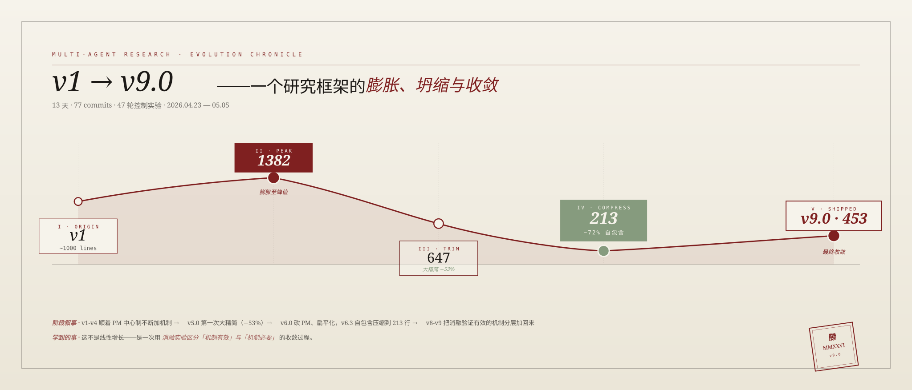
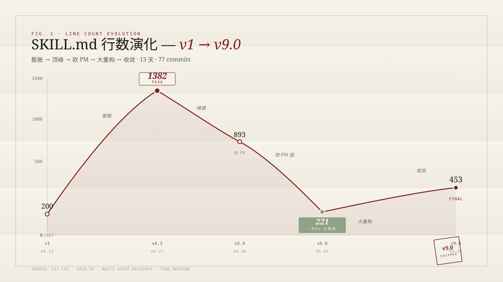
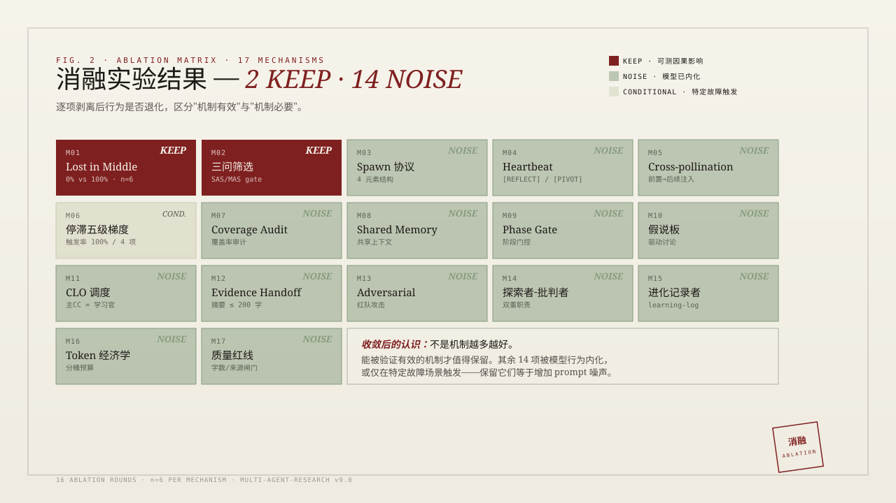

2026 年 4 月。Claude Code 官方的"Deep Research"已经可用，但有一个让我难受的问题： 它是黑盒。AI 在背后做了什么决定、调度了几个 Agent、用了什么搜索策略—— 作为用户你只看到结果，看不到过程。商业秘密合理，但我想自己有一套。
所以这不是"做个工具"——这是把 47 轮实验里发现的协作规律凝固成可复现的 Skill。
最初的 v1 是 200 行的"主 Agent 调度 5 个子 Agent"的朴素架构。 到 v4.3 时膨胀到 1382 行，加了 PM 中心制、覆盖率审计、共识度投票、记忆衰减…… 看起来全面，但实测时发现：很多"机制"是写在 prompt 里的，AI 并不真的执行它们，只是"看起来在执行"。
v5.4 第一次大规模精简到 893 行，砍掉了 PM 层。 v6.0 继续重构到 221 行——v5.4 → v6.0 行数下降约 80%（893 → 221）， 但同样的研究题目，输出质量反而上升。这逼我承认一件事：
最终 v9.0 收敛到 453 行，是把 v6.0 的精简结构 + 6 个"被消融实验证明必要"的机制重新加回来。

主CC(董事长)
→ PM(总经理)
→ Expert ×N
→ Explorer / FactChecker
→ Critic / Synthesizer
→ CLO(旁听记录员)
问题：PM→Expert 二级 spawn 在 4 个项目中全部断线。CLO 做完即退出无法持续运行。
主CC(老板兼PM)
├─ Expert(研究员) ×N
└─ QualityReviewer
主CC 自己兼任：
记录员 + 关卡检查 + 执笔人
结果：运行时 token 消耗 -80%，Agent 存活率 100%。
裁掉中层（PM）不是为了精简——是 4 个真实项目证明二跳链路不可靠。 合并 FactChecker + Critic 不是偷懒——是发现两者工作内容 >50% 重叠。 每一次删减都有数据支撑，不是审美选择。
最值得反复读的是这条因果链——每一步改动都是前一步的逻辑推论， 像剥洋葱一样一层层发现"原来这一步是多余的"：
R7 是整个实验中最违反直觉的一轮。假设：让研究员写得更精炼 → 系统省 token。
水床效应：研究员写得更精炼 → 每句话都是数据点 → 质检需要验证的点从 35 个变成 47 个。 数据密度提高了，但验证工作量等比上升。系统级优化不是把每个零件单独优化然后拼起来。
秘密在于：不让研究员做完整补充搜索（贵），而是让他们在交班条里写下"想问其他板块的 2-3 个问题"， 由质检员带着问题做横向分析。提问比盲搜高效得多。
47 轮控制实验里最有冲击力的一组数据：把同一条关键约束分别放在 prompt 不同位置， 看 AI 的合规率（是否真的执行了这条约束）。
6 次测试里 0 次被执行。AI 完全跳过了中间段的关键指令——和论文里"Lost in Middle"效应吻合。
同样 6 次测试，每次都被执行。从 0 到 100 的差异只来自"在哪里写"。
这是 v9.0 所有 prompt 模板硬规则的起点：关键约束必须放首尾，禁止藏在中间。 这不是经验之谈，是 47 轮实验里通过 A/B 切换位置反复验证过的因果结论。

Multi-Agent Research 自己没有真实用户——它的"用户"就是我，跑 47 轮实验的我。 这是它的弱点（面试官会问"你的用户是谁"），也是它真正的价值： 它是方法论沉淀的容器。
验证这套方法论是否真的有用的方式是：把它用到一个有真实用户的产品上。 所以我做了 knowledge-healer—— 用 3+2 多 Agent 并行架构（Multi-Agent Research 的直接派生）， 解决企业知识库自愈这个真实痛点。
git clone https://github.com/Evan-miwillbe/multi-agent-research.git ~/.claude/skills/multi-agent-research
/multi-agent-research 即可启动。前置要求：Claude Code + web-access skill。每个机制都来自学术论文或实战失败。加入前必须设计触发场景跑完整研究。 最终 2 个被证明有不可替代的因果影响（KEEP），14 个已被模型内化或仅在特定场景触发（NOISE），1 个有条件保留。
"NOISE"不是"没用"——这些机制在特定场景下仍有价值（如异议触发在学术争议主题中发现了 2 个 P0）。 但在标准流程中，Claude 已经内化了这些行为，显式写在 prompt 里不增加额外收益。
做 Multi-Agent Research 之前，我花过几年时间在部队的文书 SOP、天风证券的 REITs 周报 SOP、 美动医疗的 VBA 自动化上。这一路我学到的不是"怎么写代码"，是怎么把一件做过的事拆解成可复用的流程。
Multi-Agent Research 是这条主线在 AI 时代的版本。47 轮实验的每一轮， 我都不是为了"做出一个更好的产品"，是为了把上一轮的发现固化成下一轮的硬规则。 这是慢工——但回头看，13 天能跑完 77 个 commit、47 轮控制实验、 并把整个过程的因果链写进 README，这种密度本身就是一种"产品力"。
非 CS 科班，没什么"工程师光环"。我做这件事的底气是把模糊的协作直觉变成可验证的实验—— 这是过去几年 SOP 训练给我的真正能力。
v9.0 收敛后，我做了一个实验——把 Multi-Agent Research 里被验证有效的机制，
迁移到完全不同的领域：编程。结果是 multi-coder（v1.2，664 行 SKILL.md）。
17 个机制里有 12 个被直接复用（三问筛选、Spawn 首尾约束、停滞恢复梯度、Cross-pollination 等）， 5 个是编程场景新增的（Phase 0.5 写前检测、安全 Gate、EII 现有实现目录、arch_fingerprint 架构指纹、Architecture Gate）。
为了做这件事，我用 multi-agent-research 本身又跑了一次3 Agent 并行研究—— 44 个来源 + 8 位开发者反馈，回答的问题是"AI 不知道什么时候不该写代码"。 这是我目前为止最满意的"用工具改进工具"的循环。